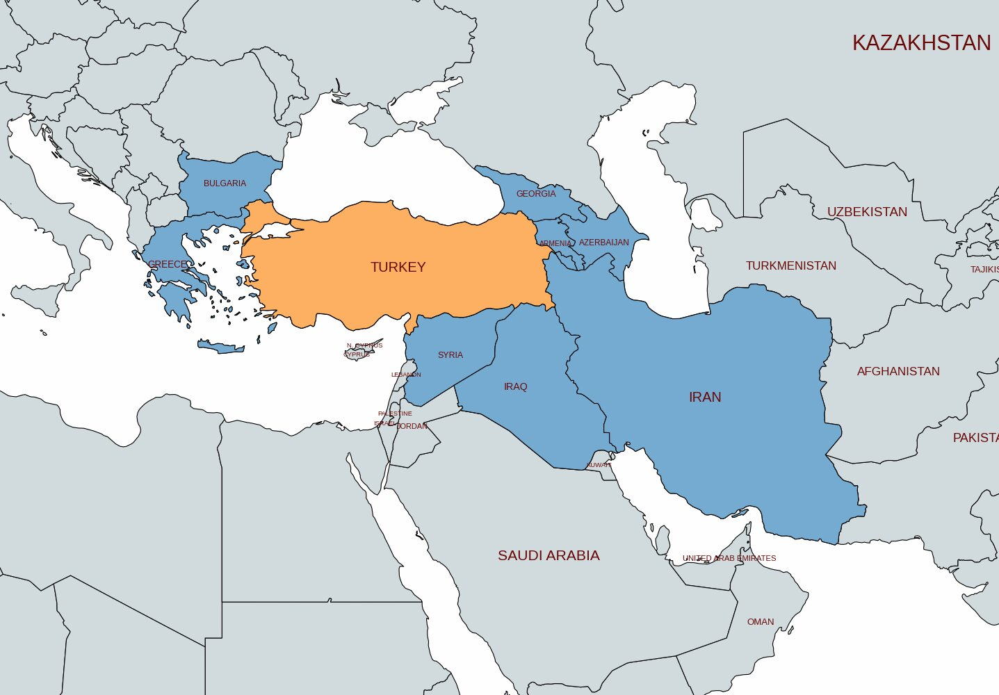
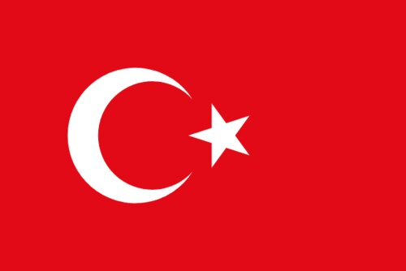
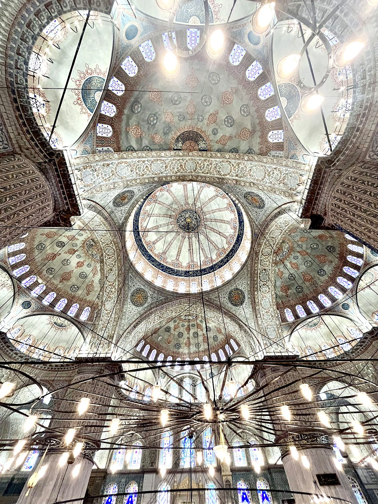
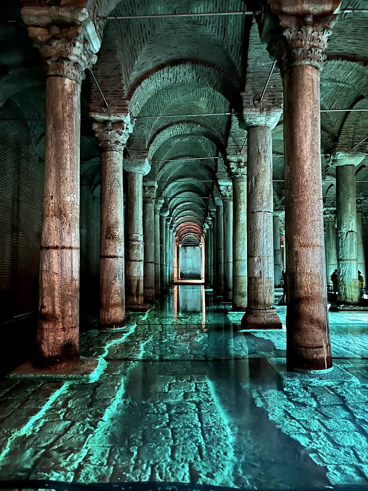
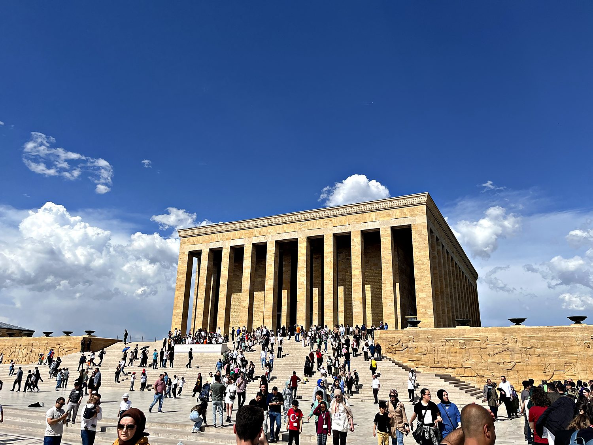

I traveled through Türkiye in early May 2023 with my friend Winfred, entering from Georgia. I started in the modern capital of Ankara, then took a train to the incomparable city of Istanbul, which straddles two continents at the meeting point of Europe and Asia. Few countries pack in this much history. I walked through Byzantine cathedrals turned mosques, imperial Ottoman palaces, underground Roman cisterns, and the memorial to Ataturk, the man who forged the modern republic from the wreckage of an empire. Türkiye also happens to be a country with which my own possible distant Armenian heritage has a fraught and painful history, which lent certain moments an added weight. But I was met everywhere with startling generosity. From bus drivers who waved me aboard for free to strangers who pressed fruit and chocolate into my hands, I came away with an abiding affection for a place of extraordinary depth, warmth, and complexity.
Istanbul is, quite simply, one of the world's great cities. Straddling the Bosphorus strait, it is the only major city on Earth to sit on two continents. For over 1,500 years, as Byzantium, then Constantinople, then Istanbul, it served as the capital of two of history's mightiest empires. I wandered its hills endlessly: the historic Sultanahmet peninsula with its skyline of domes and minarets, the buzzing Grand Bazaar where I cheerfully overpaid for gifts, the Galata Tower and its sweeping views, and a ferry across to the Asian side simply for the pleasure of standing on another continent. Earlier, in the planned modernist capital of Ankara, I had climbed to the old castle, visited grand mosques, and paid my respects at Anıtkabir, the monumental mausoleum of the republic's founder. Together the two cities capture Türkiye's central tension and charm: one an ancient palimpsest of empires, the other a deliberate 20th-century statement of a nation reinventing itself.

The land of modern Türkiye (previously called Anatolia, or Asia Minor) is one of the great cradles of civilization, home to some of the oldest known human settlements on Earth. Over the millennia it was ruled by Hittites, Greeks, Persians, and Romans, before becoming the heartland of the Byzantine (Eastern Roman) Empire, with Constantinople as its dazzling Christian capital for over a thousand years. In 1453 the city fell to the Ottoman Turks under Mehmed the Conqueror, and for the next four and a half centuries the Ottoman Empire ruled a vast domain stretching across the Middle East, North Africa, and southeastern Europe. Its sultan doubled as caliph of the Islamic world. At its height it was among the most powerful states on the planet, and its cultural and architectural legacy still defines the skyline of Istanbul.

By the early 20th century the Ottoman Empire was in terminal decline, and its collapse after defeat in the First World War was accompanied by immense upheaval and atrocity. This includes the Armenian Genocide of 1915, which the Turkish state still does not officially recognize, a fact I found impossible to set aside given my own background. From the ashes of the empire, the general Mustafa Kemal Atatürk led a war of independence and in 1923 founded the modern Republic of Türkiye, embarking on a sweeping program of secularization, westernization, and reform that transformed the country. He replaced the Arabic script with a Latin alphabet, emancipated women, and severed the caliphate. Atatürk remains a near-sacred figure, his image and legacy everywhere. Today Türkiye is a large, populous, and pivotal nation of some 85 million, bridging Europe and Asia both literally and politically, and still working out the balance between its secular republican foundations and its deep Islamic and Ottoman roots.
Facing the Hagia Sophia across a garden square in old Istanbul stands the Sultan Ahmed Mosque, universally known as the Blue Mosque for the tens of thousands of hand-painted İznik tiles that line its interior. Completed in 1616 during the reign of Sultan Ahmed I, it was designed to rival and even surpass the Hagia Sophia opposite, and it remains one of the most beautiful working mosques in the world, famous for its cascade of domes and semi-domes and its six slender minarets. This number reportedly caused a scandal at the time, as it matched the great mosque in Mecca. Stepping inside and craning my neck up at the dizzying painted ceilings, awash in blue light filtering through 260 stained-glass windows, I found it even more ornate and breathtaking than its ancient neighbor. It is a masterpiece of the classical Ottoman style at its absolute peak.

Beneath the streets of Istanbul lies one of its most atmospheric wonders: the Basilica Cistern, a vast subterranean reservoir built by the Byzantine emperor Justinian in 532 AD to store water for the imperial palace. Descending out of the daylight, you find yourself in a cathedral-like cavern where 336 marble columns march off into the gloom, their reflections shimmering in the shallow water below, all bathed in moody colored light. Tucked into the far corner are two famous column bases carved with the head of Medusa, one placed sideways and one upside down, for reasons lost to history. It is impressively large if a touch theatrical in its modern lighting, and there is something wonderfully eerie about strolling through a 1,500-year-old water tank while carp glide silently between the ancient pillars.

High on a hill overlooking Ankara sits Anıtkabir, the immense mausoleum of Mustafa Kemal Atatürk, founder and first president of the Turkish Republic. Completed in 1953, it is a striking blend of ancient and modern, a stern colonnaded monument approached by a long ceremonial avenue lined with stone lions, drawing on Hittite and classical motifs to root the young republic in Anatolia's deep past. It was packed with Turkish visitors when I came, many visibly moved, which spoke volumes about Atatürk's enduring, almost reverential place in the national imagination. The adjoining museum tells the story of the war of independence and the founding of the republic. This narrative is inspirational, though it is conspicuously silent on the darker chapters of the empire's fall. It set me thinking hard about how nations build the stories they tell about themselves.
